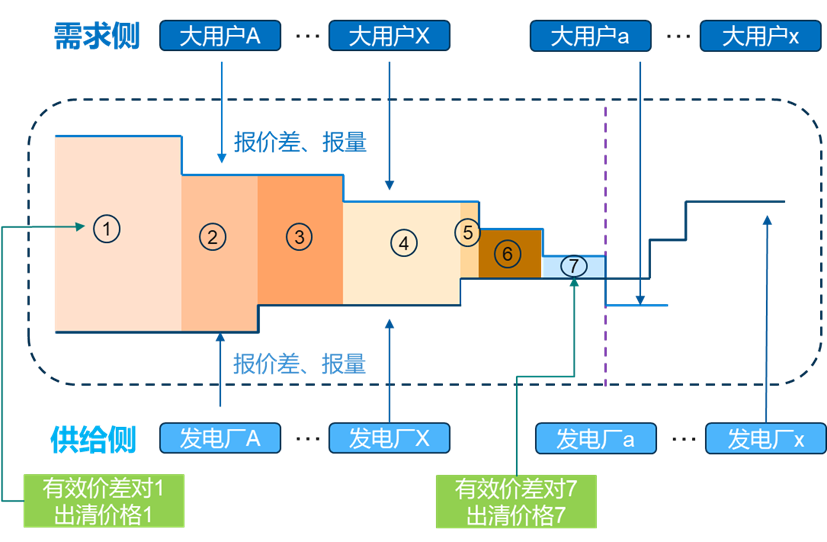
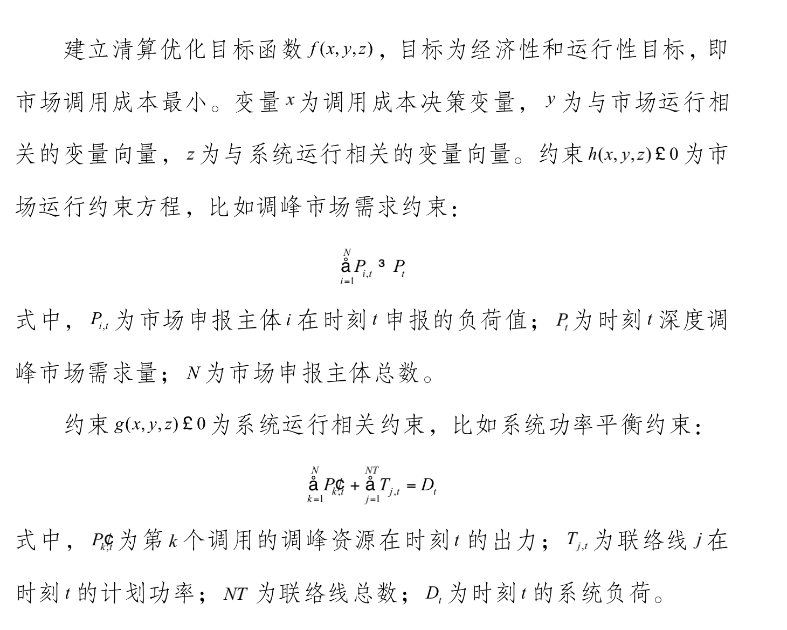
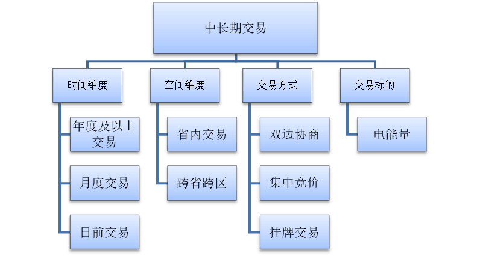
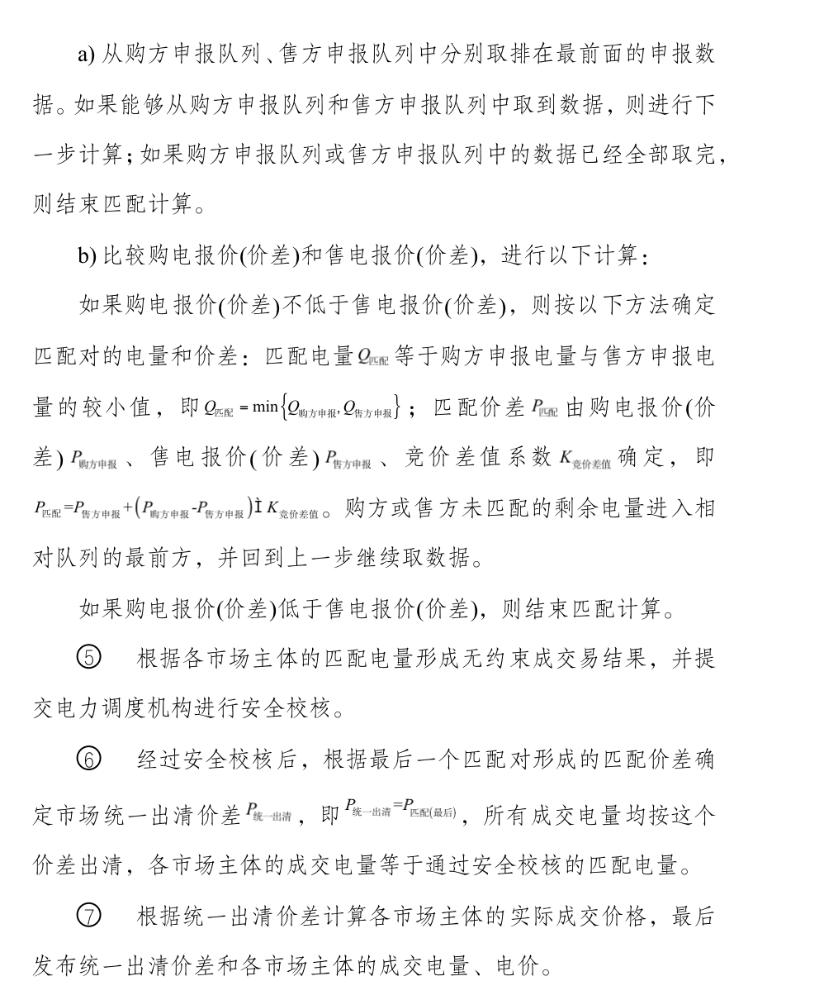
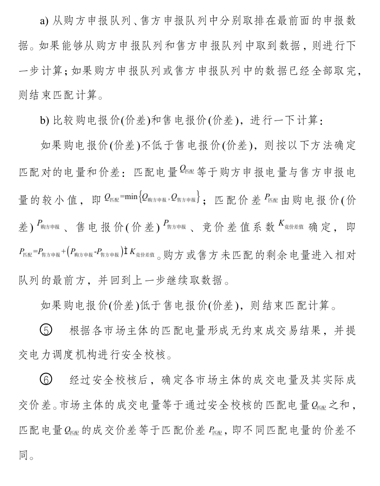
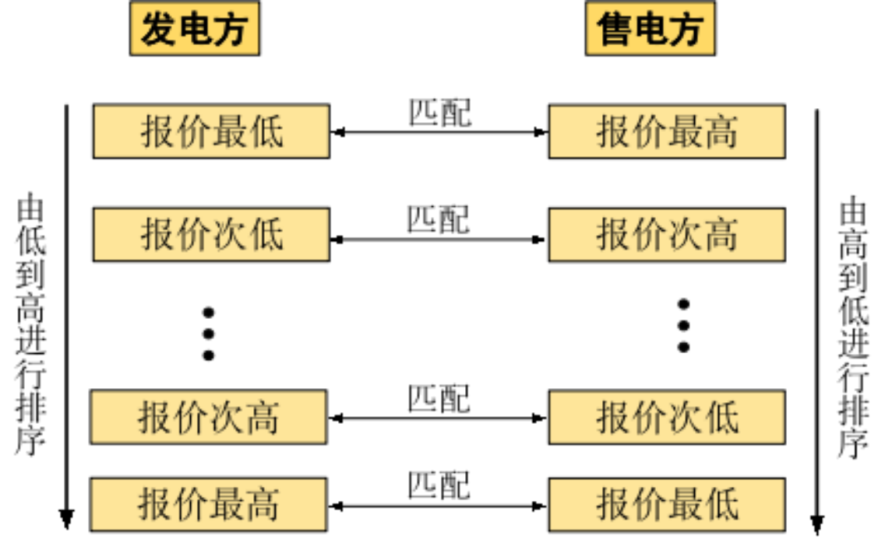
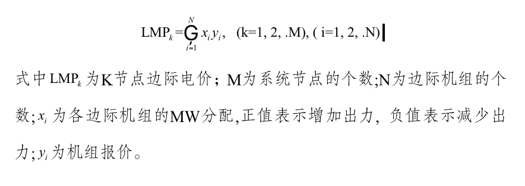

实验简介
实验项目的必要性及实用性
电力行业关乎国计民生，电网运行的核心是确保电网安全运行和电力可靠供应。以新能源为主体的新型电力系统，包括新能源为主体的电源结构，高弹性的数字化、智能化电网，源网荷储多元互动，及以电为中心的综合能源服务体系等。通过统一高效、有机协调的电力市场，实现电力系统各环节紧密连接、稳定有序，为经济社会发展提供源源不断的动力支持。
2021年3月，习近平主持召开中央财经委员会第九次会议强调：构建以新能源为主体的新型电力系统，加快推进碳排放权交易。以低碳清洁、安全高效为显著特点的能源转型不断驱动现代电力系统深度重构，高比例新能源接入特征愈加凸显。高比例新能源的接入给电网运行安全带来的极大挑战，亟待通过市场调节手段提高电网运行的稳定性。
在“双碳”目标和新型电力系统建设背景下，依托电力技术经济虚拟教研室和电力技术经济双学位班，开设电力市场虚拟仿真实验教学。本实验教学以计算机仿真系统来构建实验环境和理论模型，模拟多种电力市场交易方式；以电力市场理论课程来揭示市场环境下真实的交易规律，提升学生更对理论知识的掌握和理解；通过情境设计与学生的参与，使知识有效地内化，转化为学生的能力，提高学生的判断能力、决策能力和创新能力。培养具备电气管理与经济学科交叉融合的知识结构、工程实践能力和创新能力，为国家能源重点行业输送高质量复合型创新人才和行业精英。
实验教学目标
(1)了解电力系统的整体构成(能源概况、电力概况、网架概况)及各环节主要功能、各环节主要设备、电力市场交易的基本概念和现状(湖南省电力市场交易概况和现状)；
(2)掌握市场交易中不同交易类型下的交易流程和规则、不同市场主体的市场行为和收益成本；掌握中长期交易方法、结算流程，通过多次重复实验了解与实现市场成员利益最大或成本最小的交易策略；
(3)科研反哺教学，以中国特色电力市场尤其湖南电力发展现状为背景搭建解决实际问题的交易场景；通过电力市场虚拟仿真实验模拟，展示中国特色电力市场交易规律；
(4)提升学生实践和创新能力，培养具备电力、管理与经济交叉学科知识的复合型人才。
实验原理
电力市场交易模式概述
电力系统定义:电力系统是由发电厂、送变电线路、供配电所和用电等环节组成的电能生产与消费系统。它的功能是将自然界的一次能源通过发电动力装置转化成电能，再经输电、变电和配电将电能供应到各用户。为实现这一功能，电力系统在各个环节和不同层次具有相应的信息与控制系统，对电能的生产过程进行测量、调节、控制、保护、通信和调度，以保证用户获得安全、优质的电能。电力系统由一次系统和二次系统组成，一次系统由发电机、送电线路、变压器、断路器等发电、输电、变电、配电等设备组成；二次系统由继电保护、安全自动控制、系统通讯、调度自动化、DCS自动控制系统等组成。
电力市场定义:广义的电力市场是电力生产、传输、使用和销售关系的总和。狭义的电力市场是竞争性的电力市场，即电能生产者和使用者通过协商、竞价等方式就电能及其相关产品进行交易，通过市场竞争确定价格和数量的机制。
电力市场的基本特征:电力市场的基本特征是开放性、竞争性、计划性和协调性。 开放性与竞争性是所有市场所共有的特征，也是新型电力系统与传统电力系统不同的地方，同时，也是实行电力市场所追求的、需要实现的特征。 计划性与协调性是电力市场所特有的特征，由电力系统的电力不易保存、必须保证实时的供需平衡、电网的安全约束、电力系统的规模效应等属性所决定。电力市场比普通的商品市场更加复杂，因此，电力市场机制不能照搬任何其他市场的机制，必须根据电力系统的实际特性来确定。
电力市场交易模式:电力批发交易市场是指发电企业与售电公司或电力大用户之间通过市场化方式进行的电力交易活动的总称。现阶段，是指发电企业、售电公司、电力大用户等市场主体通过双边协商、集中竞争等方式开展的中长期电量交易。 电力零售交易市场是指售电公司与中小型终端电力用户(一般用户)开展的电力交易活动的总称。
市场交易体系和组织形式:按交易对象划分，电力市场体系分为容量市场、电量市场和辅助服务市场等；按时间划分，电力市场体系分为中长期市场(包括一年以上市场、年市场、季市场、月市场和周市场等)、日前市场和实时市场等；按市场性质划分，电力市场体系分为物理市场和金融市场。电量市场进行电量交易，一般分为中长期市场、日前市场和实时市场。容量市场是进行容量信用(完全可用的发电能力)交易的市场，是为引导发电容量的长期投资，保持系统可靠性而设置的。辅助服务相对于有功电量市场而言的，是指为了保障电力系统安全、促进电力交易和保证电力供应而提供的除正常电能生产和输送外的额外服务。 市场中不同的交易品种可采用不同的交易组织形式来实现。常见的电力市场组织形式包括场内交易和场外交易。场内交易，类似于交易所(Exchange)交易，是指在特定的时间和场所进行的集中交易。在场内交易的交易对象必须规范化标准化，以增强市场的流动性，如证券市场等。场外交易(OTC)，就是通常所说的双边交易。场外交易可以有不同的交易方式：交易双方可以进行面对面地谈判，可以通过(电子)公告牌或经纪人撮合等模式进行。
考虑电力商品的特殊性，电力商品采用以下具体的交易方式:
①拍卖方式。交易双方分别拍卖，定价方式包括按消费者剩余定价和生产者剩余定价等。我国销售侧的目录电价定价机制为按消费者剩余定价，属于一级价格歧视，在不同的领域拍卖可实现交叉补贴。
②双边交易方式。较为常见的双边交易包括中长期电力交易合同、大用户直供和股权置换。
③撮合交易方式。由于电网中不同的节点的配送成本不一，撮合交易中电力商品的交易成本必须考虑，考虑交易成本的撮合交易中，买方和卖方分别按报价排序，买方报价高者和卖方报价低者优先成交，成交价为二者均价，即社会福利均分。如买方报价低于卖方则不能成交。
价格机制及出清算法
(1)电力市场主要成员:电力市场的参与者和利益攸关方，包括市场主体、市场运营机构和系统运行机构。
市场主体:符合电力市场准入规则的企业，作为参与电力市场竞争及运行的竞价实体，包括发电企业、售电公司、电力用户和电网企业。
市场运营机构:按照政府批准的章程和规则，构建交易公平的机制，为各类市场主体提供公平优质的交易服务，确保信息公开透明，促进交易规则完善和市场公平的机构，又称电力交易机构，或电力交易中心。
电力系统运行机构:执行市场交易计划，负责电力系统运行调度及电力系统的实时平衡，保证电力系统安全稳定、优质经济运行的机构，又称电力系统调度机构。
(2)市场报价方式
集中竞价:采用申报价格的方式，多个市场方在一起报价(按统一的电量包格式)，形成购售双方的申报曲线，申报曲线交点之前的购售双方可以成交。
挂牌交易:交易主体在市场挂牌，报价需求包括报价和交易量; 买方挂出需求，卖方挂出卖出的电量和电价，如果能接受对方的出价，就可以摘牌。如果出现同时竞争关系，可以再次竞价，价优者得。
双边协商:电力供需双方之间自主协商交易电量(电力)、价格，形成双边协商交易意向，通过电力交易平台进行申报确认，经电力交易中心校核后形成交易结果并签订交易合同。
(3)电力市场清算优化方法
电力市场清算优化建模的一般步骤为:
中长期市场交易
(1)市场主体
中长期市场是以多年、年、月、周、日以上为交易组织周期，以电能量、辅助服务、容量、输电权、需求侧响应等为交易标的开展的市场化交易。现阶段，中长期市场主要开展年、月为交易组织周期的电能量市场化交易，交易形成的中长期市场合约为差价合约，依据日前现货市场价格进行差价结算，经交易校核后生效。市场具备条件时，中长期市场交易周期从多年、年、月、周扩展至按日组织，交易标的从电能量扩展至辅助服务、容量、输电权和需求侧响应等。
中长期市场主体包括符合准入条件并完成准入注册的发电企业、售电公司、批发用户和辅助服务独立提供者等。市场条件成熟后，引入辅助服务独立提供者等其他市场主体。
(2)交易品种
中长期电能量市场交易品种包括双边协商交易、集中竞争交易、挂牌交易、基数合约交易等。
①双边协商交易是指市场主体之间自主协商交易合约周期、合约电量、交易价格、分解曲线等要素，形成交易合同的交易方式。合同申报至交易系统，经相关方确认和交易校核后生效。双边协商交易由市场主体自主开展，在规定时间内提交合同至交易系统。
②集中竞价交易是指在交易系统集中组织开展的，由市场主体申报交易意向，交易系统自动撮合匹配形成交易结果的交易方式，交易采用常用分解曲线。集中竞价交易分集合竞价、连续竞价两个阶段进行。集中竞价交易分为年度集中竞争价交易、月度集中竞价交易以及周集中竞价交易，其中年度集中竞价交易每年底开展，月度集中竞价交易每月开展，周集中竞价交易每周开展。
③挂牌交易是指在交易系统集中组织开展的，由市场主体通过交易系统进行挂牌、摘牌操作形成交易结果的交易方 式，交易采用自定义分解曲线。挂牌交易每周开展。
(3)集中竞价统一出清算法
①出清计算以“价格优先、时间优先、环保优先”为原则。
②按照购电申报价差由高到低的顺序对电力用户、售电公司的申报电量进行排序，价差相同时按照最终申报时间早者优先的原则排序，价差、时间均相同时暂将多个申报电量合并，由此形成价差单调递减的购方申报电量队列。在成交结果出来后，对于价差、时间均相同的合并申报电量，根据申报电量比例将成交电量分配给电力用户和售电公司。
③按照售电申报价差由低到高的顺序对发电企业的申报电量排序，价差相同时按照最终申报时间早者优先的原则排序，价差、时间均相同时按照“可再生能源优先，节能环保优先”的原则排序；当以上条件均相同时，暂将多个申报电量合并，由此形成价差单调递增的售方申报电量队列。在成交结果出来后，对于不同发电企业的合并申报电量，根据申报电量比例将成交电量分配给不同发电企业。
④依次按顺序对购方申报队列和售方申报队列中的电量进行匹配，匹配方法如下：
(3)集中竞价高低匹配算法
①出清计算以“价差优先、时间优先、环保优先”为原则。
②按照购电申报价差由高到低的顺序对电力用户、售电公司的申报电量进行排序，价差相同时按照最终申报时间早者优先的原则排序，价差、时间均相同时暂将多个申报电量合并，由此形成价差单调递减的购方申报电量队列。在成交结果出来后，对于价差、时间均相同的合并申报电量，根据申报电量比例将成交电量分配给电力用户和售电公司。
③按照售电申报价差由低到高的顺序对发电企业的申报电量进行排序，价差相同时按照最终申报时间早者优先的原则排序，价差、时间均相同时按照“可再生能源优先，节能环保优先”的原则排序；当以上条件均相同时，暂将多个申报电量合并，由此形成价差单调递增的售方申报电量队列。在成交结果出来后，对于不同发电企业的合并申报电量，根据申报电量比例将成交电量分配给不同发电企业。
④依次按顺序对购方申报队列和售方申报队列中的电量进行匹配，匹配方法如下：
 挂牌交易
(1)挂牌交易
挂牌交易采用匿名机制，主要包括挂牌申报、摘牌交易、结果发布等环节。
①挂牌申报市场主体在交易时段内申报挂牌，挂牌内容包括合约周期、交易电量、交易价格、分解曲线等内容。挂牌电量应为基本单位电量的整数倍，且满足交易电量约束。挂牌价格采用绝对电能价格形式，满足最小变动价位，且不得超过交易价格约束。
②摘牌交易市场主体根据交易系统发布的挂牌信息进行摘牌操作，接受挂牌方挂牌电量、挂牌价格、分解曲线等信息。
③初步结果发布摘牌操作生效后形成初步结果，由交易中心即时发布。
④成交价格挂牌交易的成交价格为挂牌价格。
⑤合同类型基荷合同、腰荷合同和峰荷合同。
(2)定价方式挂牌交易出清算法
对于定价方式挂牌交易，电力交易平台发布用电需求电量(或发电可供电量、辅助服务)、价差等信息，符合资格要求的另一方市场主体通过竞争获得电量(或其他辅助服务)，交易价差固定为发布的价差。因此，市场主体参与定价方式挂牌交易时不需要申报电价(价差)，仅需要申报电量。
定价方式挂牌交易的出清计算原则上采用“时间优先、环保优先”的方法；也可以采用按申报电量比例分配挂牌电量的出清方法。对于定价方式挂牌交易，挂牌电量、挂牌电价、出清方式由安排挂牌交易的政府部门或提出挂牌交易申请的市场主体确定，电力交易机构在市场交易公告中发布相关内容。
“时间优先、环保优先”方法的计算过程为：
①对于发电企业参与的交易，首先按照最终申报时间的先后顺序对申报电量进行排序；如果申报时间相同，按照“可再生能源优先，节能环保优先”的原则排序；当以上条件均相同时，暂将多个申报电量合并；由此形成申报电量队列。在成交结果出来后，对于合并计算的申报电量，根据申报电量比例将成交电量分配给发电企业。
②对于电力用户和售电公司参与的交易，首先按照最终申报时间的先后顺序对申报电量进行排序，当申报时间相同时暂将多个申报电量合并，由此形成申报电量队列。在成交结果出来后，对于合并计算的申报电量，根据申报电量比例将成交电量分配给电力用户和售电公司。
③依次按顺序从申报电量队列中取电量数据，并相应增加预成交电量队列数据。当预成交电量之和等于电力交易平台发布的挂牌交易需求电量(或发电可供电量、辅助服务)，或者申报电量队列中的数据全部取完，则结束出清计算。电力交易平台关闭摘牌申报。
④根据各市场主体的预成交电量形成无约束成交易结果，并提交电力调度机构进行安全校核。
⑤经过安全校核后，确定各市场主体的成交电量及其实际成交价格，其中，实际成交价格根据挂牌价差、电厂的政府批复上网电价(基数电量电价)、用户的购电基准价等进行折算。
(3)竞价方式挂牌交易出清算法
对于竞价方式挂牌交易(也称为单边集中竞价交易)，电力交易平台发布用电需求电量(或发电可供电量、辅助服务)、价差上限或下限等信息，符合资格要求的另一方市场主体申报电量和电价(价差)，通过竞争获得电量(或其他辅助服务)。竞价方式挂牌交易可以选择按统一价差出清或按申报价差出清，挂牌电量、挂牌限价、出清方式由提出挂牌交易安排的政府部门或提出挂牌交易申请的市场主体确定，电力交易机构在市场交易公告中发布相关内容。
①统一价差出清
(a)出清计算以“价差优先、时间优先、环保优先”为原则。
(b)对于发电企业参与的交易，按照申报价差由低到高的顺序对申报电量排序，价差相同时按照最终申报时间早者优先的原则排序，价差、时间均相同时按照“可再生能源优先节能环保优先”的原则排序；当以上条件均相同时，暂将多个申报电量合并，由此形成价差单调递增的售方申报电量队列。在成交结果出来后，对于不同发电企业的合并申报电量，根据申报电量比例将成交电量分配给不同发电企业。
(c)对于电力用户、售电公司参与的交易，按照申报价差由高到低的顺序对申报电量进行排序，价差相同时按照最终申报时间早者优先的原则排序，价差、时间均相同时暂将多个申报电量合并，由此形成价差单调递减的购方申报电量队列。在成交结果出来后，对于价差、时间均相同的合并申报电量，根据申报电量比例将成交电量分配给电力用户和售电公司。
(d)依次按顺序从申报电量队列中取电量数据，并相应增加预成交电量队列数据。当预成交电量合计等于电力交易平台发布的挂牌交易需求电量(或发电可供电量、辅助服务)，或者申报电量队列中的数据全部取完，则结束出清计算。
(e)根据各市场主体的预成交电量形成无约束成交易结果，并提交电力调度机构进行安全校核。
(f)经过安全校核后，确定各市场主体的成交电量及市场出清价差，市场出清价差等于最后一个进入成交电量队列的报价(价差)，所有成交电量均按照统一出清价差结算。
(g)计算各市场的实际成交价格，实际成交价格根据统一出清价差、电厂的政府批复上网电价(基数电量电价)、用户的购电基准价等进行折算。
②申报价差出清
(a)出清计算以“价差优先、时间优先、环保优先”为原则。
(b)对于发电企业参与的交易，按照报价(价差)由低到高的顺序对申报电量排序，价差相同时按照最终申报时间早者优先的原则排序，价差、时间均相同时按照 “可再生能源优先，节能环保优先”的原则排序；当以上条件均相同时，暂将多个申报电量合并，由此形成价差单调递增的售方申报电量队列。在成交结果出来后，对于不同发电企业的合并申报电量，根据申报电量比例将成交电量分配给不同发电企业。
(c)对于电力用户、售电公司参与的交易，按照报价(价差)由高到低的顺序对申报电量进行排序，价差相同时按照最终申报时间早者优先的原则排序，价差、时间均相同时暂将多个申报电量合并，由此形成价差单调递减的购方申报电量队列。在成交结果出来后，对于价差、时间均相同的合并申报电量，根据申报电量比例将成交电量分配给电力用户和售电公司。
(d)依次按顺序从申报电量队列中取电量数据，并相应增加预成交电量队列数据。当预成交电量合计等于电力交易平台发布的挂牌交易需求电量(或发电可供电量、辅助服务)，或者申报电量队列中的数据全部取完，则结束出清计算。
(e)根据各市场主体的预成交电量形成无约束成交易结果，并提交电力调度机构进行安全校核。
(f)经过安全校核后，确定各市场主体的成交电量及成交价差，市场主体的成交价差等于各自的申报价差。
节点边际电价计算
节点边际电价(locational marginal pricing)是在考虑了输电阻塞、机组报价等因素, 以最低系统供电成本满足系统运行要求, 由线性化程序计算得出，其定义为系统某一节点增加1MW负荷, 系统向该节点供应电能的边际(或微增)成本。故当节点增加1MW负荷, 哪些机组参与了分配, 如何分配, 而参与分配的机组就是边际机组。计算LMP常用加权求和法。
